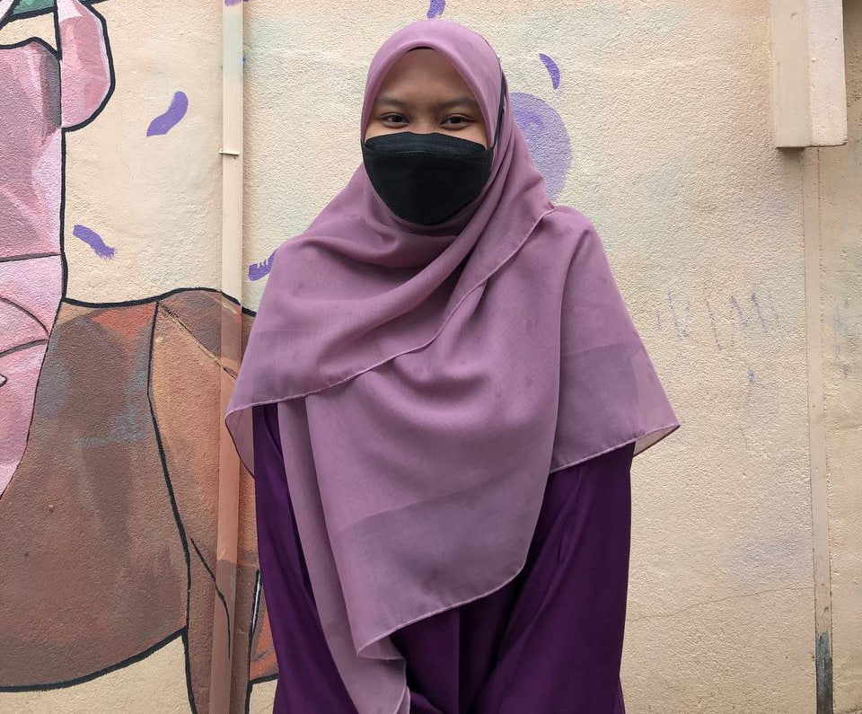

To my beloved, beautiful, and handsome readers, do you know the creation in this world has two types of personalities which are introvert and extrovert? These personalities exist in all beings in this world. At the beginning of my introduction, I am 80% introverted and 20% extroverted.
My parents gave me a beautiful name, but when I was a kid and in primary school, I don’t like my name because I do not know its meaning. And boom, when I was in high school, I learn the Arabic language and know the meaning, I loves my name, Nur Imani Aisyah Binti Abdul Rahman. People and friends just call me Imani. While all my family calls me Aisyah.
I was born on 19 December 2002 and I live in Puncak Alam, Kuala Selangor. This year I am 21 years old.
I like cartoons and drawings. I love watching anime and collecting characters I like. Even if it’s a fantasy, it helps me forget some problems and fill my free time. My favourite character is definitely Uzumaki Naruto.
When I was a child, my dream was to become a doctor, but I was not good at science and math. I also can’t see the blood, but I still want to help the injured person. Although it sounds sad, I am still learning about how to give first aid to the victim. I also want to feel like a hero even if the chance is only 10%.